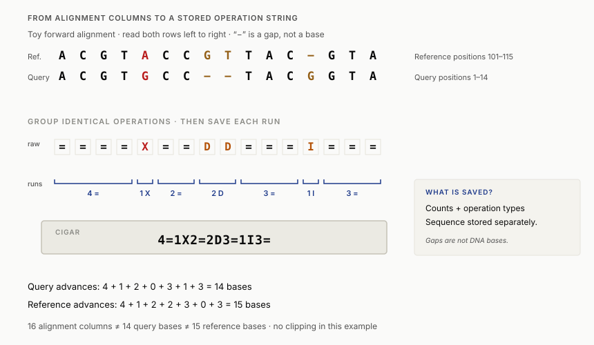

00–15 / Reconnect with week 1From read quality to read placement
In the week 1 homework, you removed uncertain bases from read tails. We will now try to locate the retained sequences in a reference.
Look at how many bases your homework retained and the estimated error after trimming. What might make a shorter read harder to locate?
Return to our fictional cell cultures. If we investigate a possible DNA difference, we need to compare observations of corresponding regions. A reference sequence supplies a coordinate system for that comparison. Its version matters: coordinates refer to that particular sequence, and a sample may differ from it.
Can we locate a read when its sequence occurs more than once?
Our short sequences are invented teaching examples, independent of the fictional cultures. By the end, you should be able to locate all exact matches, explain a gap and an alignment score, choose between global and local alignment, and interpret a search hit using more than its percentage identity.
Jump to an activity: place a read · try a gap · global or local? · search a toy database · exact-search stepper · alignment animator · search-space explorer.
15–50 / PlacementExact read placement
A query is the sequence we want to investigate. Slide it along the reference, comparing one window at a time. For these short strings, we can inspect every comparison. An exact match can be absent, unique, or repeated.
Find matching positions / 8 minutes
Where could this read come from?
ATGCCA has two forward-strand placements, starting at 0 and 12.
Reference ATGCCATGACCTATGCCA
Read ATGCCA
ATGCCAWorked example and interpretation
ATGCCA starts at positions 0 and 12. CCATGA starts at 3. Shortening to ATG adds a placement at 5. A read’s quality scores describe base-call uncertainty; they cannot distinguish identical copies of a repeat.
Watch the comparisons / 10 minutes
How much work does exact search do?
The stepper shows each letter comparison behind a placement. Use GATTACAGATTACA as the reference and TACAGA as the query.
- Keep “Exit at first mismatch” selected. Predict the first successful start before stepping.
- Watch how a mismatch ends the current attempt. Count comparisons through starts 0, 1, 2, and 3.
- Try reference
AAAAAand queryAAA. Check whether overlapping hits are retained.
Open the exact-search stepper
Open search stepper in a full tab ↗
Worked reasoning
The first exact hit is at zero-based start 3. Starts 0, 1, 2, and 3 require 1, 1, 2, and 6 comparisons respectively: 10 comparisons to the first hit. Searching all starts takes additional work. The repeated example has three overlapping hits, at 0, 1, and 2.
We use zero-based positions: the first base is position 0. A match starting at 3 with length 6 occupies positions 3 through 8; in Python that is reference[3:9]. Many biological reports use one-based coordinates, so always check the convention.
DNA has two complementary strands. A read may match the stored reference directly or through its reverse complement. The reverse complement of ATGCCA is TGGCAT. Searching both orientations addresses strand direction; it does not resolve repeated identical sequence.

An exact-search function should return every matching start. Repeated DNA can give several equally valid placements, even when every base was measured correctly.
Could a longer read help distinguish copies? What if it lies entirely inside a long repeat? Keep this question for next week’s assembly problem.
50–75 / ScoringMatches, mismatches, and gaps
Reads can differ from a reference because of measurement errors or genuine biological variation. A substitution changes a letter. Insertions and deletions change sequence length. In an alignment, a gap is a placeholder that lets the remaining letters correspond; it is not an observed DNA base. The alignment alone does not establish whether a difference is biological or technical.
We will use this DNA scoring rule: match +2, mismatch −1, and each gap column −2. The score ranks candidate alignments under this rule; it does not give the probability that an alignment is correct. Real tools may use different substitution scores and a separate cost for opening and extending a gap.
Move the gap / 8 minutes
Aligning a sequence with one missing base
Align AGT with ACGT. Predict the best place for the missing letter, then move the gap.
ACGT A-GT +2 −2 +2 +2
Total score: 4. Three matches and one gap.
Changing the gap cost
Now compare two valid alignments of ACGT and AGCT using the same cost:
ACGT AGCT 2 matches, 2 mismatches
A-CGT AGC-T 3 matches, 2 gaps
Both score 2 when each gap costs 2.
Worked scores
ACGT / A-GT scores 2 − 2 + 2 + 2 = 4. The left-justified ACGT / AGT- scores 2 − 1 − 1 − 2 = −2. In the second comparison, the ungapped score is always 2, while the gapped score is 6 minus twice the gap cost. A cost of 1 favours the gapped candidate; 2 ties; 3 favours the ungapped candidate. These compare stated candidates, not every possible alignment.
An optimal alignment has the highest score under the chosen rules. Different alignments can tie. Changing the score model can change the optimum. Include the scoring rule when reporting the result.
Set the gap cost to 1, then to 3. Explain the change in the preferred alignment by counting matching columns and gaps. What would happen if gaps cost nothing?
75–85 / Ten minutesBreak
After the break: how can an algorithm choose among the possible alignments?
85–120 / AlignmentGlobal and local alignment
Global alignment compares both sequences from end to end, including end gaps under our model. It is useful when the question concerns their full lengths. Local alignment finds the best-scoring pair of subsequences, allowing unrelated ends to remain outside the alignment. It is useful when only part of a sequence may be shared. Choose the scope first: a local score can leave much of each sequence outside the comparison.
Fitting a whole read within a reference
A third question is: where does the complete read fit within a longer reference? A fitting alignment includes every read base while leaving unused reference flanks unpenalized. This is one form of semi-global alignment; always state which ends are free. For reference TTACGTAA and read ACGT, the read fits the middle four bases. Global alignment must also account for the four flanking reference bases as terminal gaps in the read. Local alignment can choose subsequences of both strings, so it may omit read ends too. Local and fitting return the same region in this exact example, but impose different constraints.
The lab below compares global and local alignment. Fitting alignment is a conceptual connection to read placement; implementing it is not required in the homework. Biopython: terminal and internal gap scores.
Compare alignment scope / 6 minutes
Same sequences, different alignment scope
This activity always uses match +2, mismatch −1, and gap −2, independently of the previous activity’s control.
TTACGTAA |||| GGACGTCC
Global score 4; identity 50%; query coverage 100%.
Open the score table and explore one cell
Rows consume reference letters; columns consume query letters. Each cell stores the best score for the corresponding prefixes (global), or the best local alignment ending at that cell (local). Select a cell to see its candidate scores. A dot marks cells on one optimal traceback.
Select a score-table cell.
Worked result
For TTACGTAA and GGACGTCC, the global score is 4. Local alignment selects ACGT / ACGT, scoring 8. That local region has 100% identity but covers only 4 of the query’s 8 bases: 50% query coverage. For AAA / CCC, the best local score is zero, meaning no positive-scoring alignment under these rules.
Local table and traceback / 10 minutes
Recovering an alignment from the table
Use the local-alignment animator with reference GATTACA, query GCATGCA, and scores +2/−1/−2. Predict a cell before revealing its value, then follow a traceback from a maximum until the score reaches zero.
Open the local-alignment animator
Open alignment animator in a full tab ↗
Worked reasoning
The maximum score is 5. One optimal alignment is reference TACA against query TGCA: 2 − 1 + 2 + 2. Both occupy positions 4–7 using one-based inclusive coordinates. The traceback stops at a zero-scoring cell. Check the row and column labels before naming a move. In other examples, several traceback paths may tie.
To see how an alignment is stored in a mapping record, read the optional CIGAR worked example after the core lesson. It takes 5–8 additional minutes.
The dynamic-programming recurrence
At each cell, consider aligning two letters (diagonal), aligning a reference letter to a gap (from above), or aligning a query letter to a gap (from the left). Keep the largest resulting score. Reusing these smaller answers is dynamic programming.
For global alignment, the first row and column accumulate gap costs. For local alignment, they start at zero and every cell may also restart at zero. Global traceback starts at the bottom-right cell. Local traceback starts at a highest-scoring cell and stops at zero. The same rules work on much larger sequences, though the full table takes time and memory proportional to the product of their lengths.
One global-alignment cell: AC against AG
Let D[i][j] be the best score for reference[:i] against read[:j]. Rows consume reference letters, columns consume read letters, and ∅ denotes the empty prefix. Use match +2, mismatch −1, and gap −2.
| D | ∅ | A | G |
|---|---|---|---|
| ∅ | 0 | −2 | −4 |
| A | −2 | 2 | 0 |
| C | −4 | 0 | 1 |
Each boundary step pairs one more letter with a gap, giving 0, −2, −4. For the final cell, the diagonal candidate appends C/G to the A/A alignment: 2 − 1 = 1. From above, append C/−: 0 − 2 = −2. From the left, append −/G: 0 − 2 = −2. The maximum is 1, the optimal global score for AC against AG. The homework asks you to construct this same table.
Optional reference: a larger local-alignment example

The global method is commonly called Needleman–Wunsch; the local method is Smith–Waterman. These activities use linear gap costs and display one optimal alignment, choosing consistently when scores tie. Read mapping also uses other boundary conditions, such as aligning a whole read within a longer reference; the global and local modes here cover two common objectives.
120–160 / SearchSearching a sequence database
Locating a read against a selected reference gives possible coordinates. Searching a sequence database asks which stored sequences have similar regions. Both involve comparisons, but the database, scoring choices, and intended conclusion differ.
How candidate windows reduce alignment work
Consider a hypothetical 150-base read and a reference containing 3,000,000,000 bases. A full pairwise dynamic-programming table has 150 × 3,000,000,000 = 450,000,000,000 interior cells. For one 300-base candidate window, the corresponding count is 150 × 300 = 45,000. The complete tables also contain boundary rows and columns.
This motivates finding seeds, selecting candidate windows, and aligning within those windows. For c windows, this example requires c × 45,000 interior cells plus the work of finding candidates. These counts illustrate table size, not measured runtime or a production mapper's total work. Several windows may need examination, and a filter may omit a useful candidate.
One way to reduce work is to look first for short matching words, called seeds, and examine promising candidates more carefully. Longer exact seeds tend to admit fewer candidates, but they may miss a useful similarity interrupted by differences. BLAST uses heuristic search strategies and statistical evaluation; it does not guarantee the exact optimal local alignment for every database entry. NCBI BLAST glossary.

Compare seed lengths / 10 minutes
Which candidates does an exact seed miss?
Our query is ACGTTGCA. This tiny invented database contains five sequences. A candidate passes if it shares any exact query word of length k, on the forward strand. Predict what increasing k will do.
With k = 4, three of the five candidates pass the seed filter.
| Candidate | Exact seed | Local score | Identity | Query coverage | Inspect |
|---|---|---|---|---|---|
| Enable JavaScript to explore. The worked example below gives the results. | |||||
Choose a candidate to inspect its alignment.
Worked audit and interpretation
At k = 4, exact ACGTTGCA, near ACGTCGCA, and short-region GGGACGTTTT pass. Interrupted ACATTACA shares no exact 4-mer, but its exact local alignment still scores 10 and covers the whole query. The short-region candidate also scores 10, with 100% identity over only 62.5% of the query. The tied scores describe alignments with different identity and coverage.
The activity filters candidates by exact seeds, then scores local alignments. It computes no BLAST statistics or biological annotations; the candidate count shows how the filter changes.
Identity and query coverage
Identity is the fraction of aligned columns containing the same letter under our stated convention. Query coverage is the fraction of query positions included in the alignment. A short exact match can have 100% identity while leaving most of the query unexplained. For real reports, check whether coverage describes a single aligned region or combines several regions. NCBI output-field definitions.
Average coverage (mean read depth) describes a sequencing dataset: the mean number of reads covering a reference position, including positions with zero reads. Three four-base reads aligned fully within a 12-base reference give 3 × 4 / 12 = 1×. This is different from the percentage of a query covered by a search hit. The mean can hide gaps: all three reads could cover the same four positions. Count read bases aligned to reference positions, excluding clipped or inserted bases. Illumina: mean mapped read depth. In Week 3, we compare mean depth with the fraction of reference positions covered.


A BLAST E-value estimates the number of alignments with a score at least this high expected by chance under the statistical model and search space. It depends on the search context, including database size. It is not the probability that this particular hit is false, and it does not establish a protein’s function. NCBI: statistics of sequence similarity scores.
Change the search context / 10 minutes
Can the same alignment have a different E-value?
Hold the bit score and effective query length fixed while increasing the effective database length tenfold. Predict whether the expected number of chance matches will rise, fall, or stay the same.
Open the search-space and E-value explorer
Open E-value explorer in a full tab ↗
Worked prediction and optional equation
The simplified relationship is E = m × n × 2^(−bit score), using effective query length m and effective database length n. With score 40, m = 100, and n = 1,000,000, E is approximately 0.00009095. Raising n to 10,000,000 raises E tenfold to approximately 0.0009095. Raising the score by one bit halves E at fixed search space.
You do not need to memorize the equation. Use it to explain the tenfold change in E. The explorer uses a simplified effective-length model; BLAST applies additional corrections.

Homology means shared evolutionary ancestry. Sequence similarity can support an inference of homology, but “90% homology” is not the same as 90% identity. Function claims also need context: which region matched, sequence length, organism, annotation provenance, and other biological evidence. NCBI glossary.
A teammate says, “The top hit has 100% identity, so our entire sequence must have the same function.” Use the short-region candidate to challenge that claim. What would you inspect next?
160–180 / Synthesis and homework handoffReview questions
Return to our cell-culture question. A well-supported alignment could help locate a DNA difference between the cultures. We would still need to investigate whether that difference affects growth.
- Why can a high-quality read still have several possible locations?
- How can changing a gap cost change which alignment is preferred?
- Why can 100% identity coexist with low query coverage?
- How could a seed-based search overlook a useful candidate?
Compare your explanations
Repeats can produce multiple valid placements. Scoring choices determine the tradeoff between mismatches and gaps. Identity describes aligned columns while coverage describes how much of the query participates. A candidate may contain a good alignment without an exact seed of the selected length.
In Week 3, we ask how overlapping reads can reconstruct a longer sequence, and why repeated regions create ambiguity in assembly graphs.
After class / Homework 02 / 60–90 minutes
Exact search and global-alignment homework
Complete the notebook after week 2 and before week 3. Find every exact occurrence of a read, score candidate alignments, and complete a scaffolded global-alignment table. A provided traceback turns your table into an alignment. The tasks reuse the class examples and require basic Python, not prior experience with dynamic programming.
Keep a small analysis record
Record the following alongside your result so someone else can repeat the comparison.
- Input
- The literal reference ATGCCATGACCTATGCCA and the named toy query; forward-strand coordinates start at zero.
- Settings
- Match +2, mismatch −1, gap −2 per base; state whether the task uses exact search or whole-fragment global alignment.
- Result
- Every exact start, or the returned alignment with its score.
- Limit
- A match in this toy reference does not establish uniqueness in a genome or a biological function.
Keep the setup output with your notebook so the Python version is recorded. If you change a parameter, record the new value and rerun the dependent cells.
- Open the week-specific Colab link, save a copy in Drive, and use a Python 3 CPU runtime. Run setup first. If the repository notebook is unavailable, download it and use File → Upload notebook in Colab.
- Finish the marked tasks. Use the hints and checks to investigate errors; attempt the task before revealing its reference solution.
- Keep the match locations, scores, and returned alignments in the notebook.
- Submit the completed notebook with three sentences explaining ambiguity, scoring assumptions, and a limit on biological interpretation.
Reference solutions are collapsed using Colab forms. Try each task first; running a reference cell replaces that function in the current runtime.
All examples are synthetic. No external data, package installation, or live BLAST service is required. Prepared local Jupyter works too. Optional exploration takes additional time.
Optional reading / 5–8 minutes beyond the 180-minute classCIGAR: storing alignment operations
A traceback gives an ordered sequence of alignment operations. A CIGAR string groups consecutive identical operations into a count and a letter or symbol. A mapping record stores this string alongside the read sequence. Later, we can use the operations to arrange read observations by reference position in a pileup.
This separate, synthetic forward alignment uses only four operation types: = for an identical pair, X for differing bases, D for a reference base opposite a query gap, and I for a query base opposite a reference gap. Read the rows left to right.
Reference ACGTACCGTTAC-GTA Query ACGTGCC--TACGGTA Operation ====X==DD===I===
Group the operations into runs. There are 16 alignment columns: how many actual query bases and reference bases do they consume? If the reference starts at one-based position 101, where does the alignment end?
Reveal the CIGAR string, consumption, and stored fields
The string is 4=1X2=2D3=1I3=. A count records how often its operation repeats; 2D is two reference bases opposite gaps in the query.

4=1X2=2D3=1I3=. Enlarge figure ↗| Run | Query bases consumed | Reference bases consumed | Query positions | Reference positions |
|---|---|---|---|---|
4= | 4 | 4 | 1–4 | 101–104 |
1X | 1 | 1 | 5 | 105 |
2= | 2 | 2 | 6–7 | 106–107 |
2D | 0 | 2 | None | 108–109 |
3= | 3 | 3 | 8–10 | 110–112 |
1I | 1 | 0 | 11 | None; between 112 and 113 |
3= | 3 | 3 | 12–14 | 113–115 |
| Total | 14 | 15 | 1–14 | 101–115 |
Removing alignment gaps gives query ACGTGCCTACGGTA (14 bases) and reference segment ACGTACCGTTACGTA (15 bases). A stored SAM alignment could include these selected fields:
RNAME toy_ref POS 101 CIGAR 4=1X2=2D3=1I3= SEQ ACGTGCCTACGGTA
This is a field excerpt, not a complete SAM record. SEQ stores bases without alignment gap characters. At POS=101, the 15 reference bases span 101–115 inclusive: 101 + 15 − 1 = 115. The equivalent Python reference slice is [100:115]. This example has no clipping.
Watch the notation: M consumes one base from each sequence per repetition but can include either agreement or disagreement. It does not mean “identical base.” The separate = and X operations distinguish those cases. Both I and D are defined relative to the reference; they do not establish which evolutionary event occurred.
When constructing a pileup, an I does not move to a new reference position; a D moves along the reference without supplying a query base. Other SAM operations and fields need additional rules. Determining whether these differences are biological requires additional evidence. Definitions and consumption rules follow the SAM specification, section 1.4.